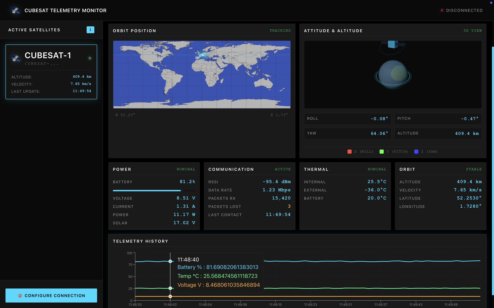
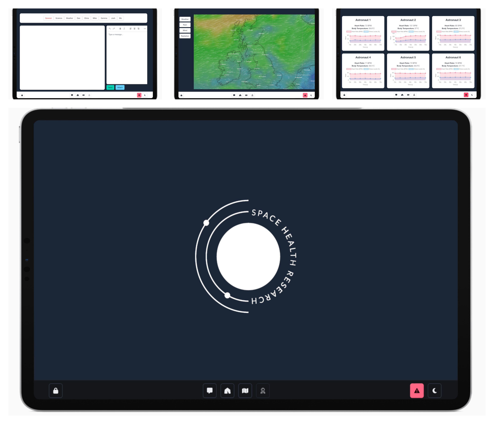

⟨/⟩ Software Projects
Real-time systems, observatory platforms, and mission-critical infrastructure
Featured Projects
🚀 Telemetry Dashboard
A real-time dashboard supporting PUS data formats, 3D attitude visualization, and integration with Redis and RabbitMQ for live satellite data streaming and visualization.
Personal/prototype project exploring Rust for real-time systems work.

🌌 HabOS - Analogue Mission Control
A mission control interface for analogue astronaut simulations, built with Go and Wails. Supports live telemetry via Redis and WebSockets, weather monitoring, and a time-delay communication system to simulate interplanetary conditions. Includes fallback safety protocols and modular integration for external research feeds.

🔭 Observatory Control System
Cloud-based control panel for robotic telescopes, built for the Astrophysics Research Institute. Includes hardware state views, environment sensors, queue-based automation, and live WebSocket telemetry. Deployed to observatory systems and commissioned on-site in La Palma.
Production adoption: This software is now being adopted on the operational Liverpool Telescope to modernise its legacy control stack.